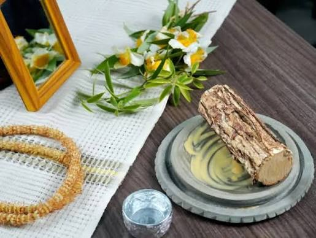

Thanakha is a traditional yellowish-white cosmetic and medicinal paste made by grinding the bark, wood, or roots of specific trees native to central Myanmar
Thanaka has been used by Burmese people since the mid-11th century. In a Bagan Pagoda, there is a Bagan era wall painting of a Bagan woman wearing thanaka. The earliest literary reference to thanakha is in a 14th-century poem written by King Razadarit's Mon-speaking consort. During King Bayinnaung, Alungpaya and Bodawpaya's military campaign in Thailand, thanakha was first introduced to Thai people.Mentions of thanaka also exist in the 15th-century literary works of Burmese monk-poet Shin Raṭṭhasāra (1486–1529).
Thanaka has been used in Myanmar for centuries. It is believed to be an old traditional beauty and skincare practice passed down from generation to generation.

Today, Thanaka is still widely used by people in Myanmar. It has become an important part of Myanmar culture and is also recognized as a symbol of Myanmar identity.
create by - Shin Thant Ko